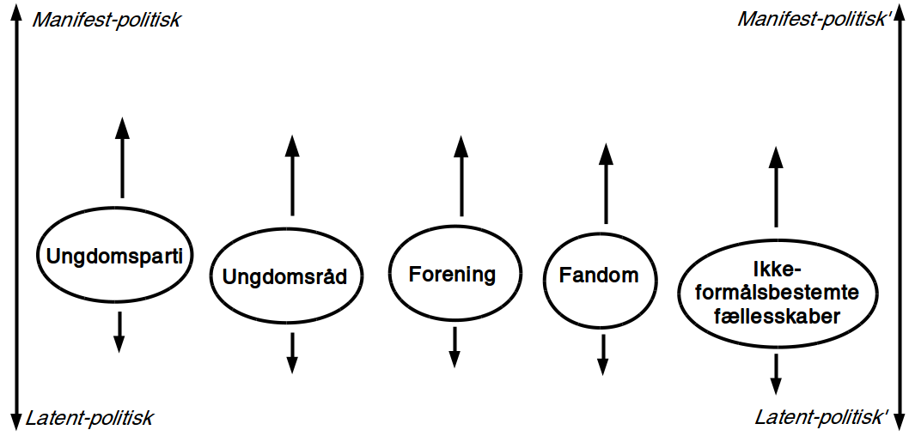

Forsknings-værksted
25. september 2019
Forskningsspørgsmål
- Hvilke muligheder for medborgerlig læring skaber rammerne for det ungdoms- og fritidspædagogiske felt?
- Hvordan kommer det politiske til udtryk i de unges livsverden i et kontinuum mellem det latent-politiske og manifest-politiske?
- Hvorvidt kan unges kritikker og drømme relateret til deres livsverden bringes ind i en offentlighed i medborgerlige læringsprocesser?

Et kontinuum over det politiske
Eksempel

Det politiske i forskellige ungdomsfællesskaber

UngHolbæks bidrag til unges demokratiske dannelse

Om ungdomsrådet (fra interview)
[…] det var et ret fint initiativ, de havde gang i. Og det her med at der også var nogle voksne inde over - altså på en måde gjorde det det dårligere, på en måde gør det det bedre, ikke? […] jeg synes det blev lidt for sådan styret af dem. […] altså meget af det vi mente blev ligesom, altså, også sagt af dem. Det var ikke så meget… det var også meget deres meninger, der kom igennem, ik'? Men samtidig formåede de også at holde styr på det […] det blev godt faciliteret. Det var mere det der med, der ikke… jeg ved ikke, hvordan det er nu, men jeg synes, der var lidt for meget plads til dem på en eller anden måde.
Om demokrati-events (fra essay-konkurrence)
Jeg kan selv huske de dage, hvor vi blev taget ud af skolen for at deltage i diverse arrangementer og aktiviteter der omhandlede Holbæk. Brainstorms om Holbæks gademiljø, snak om sportsbyer og lignende. Det var nogle hyggelige dage ingen tvivl om det, og det var sjovt at føle, at man havde indflydelse. Men så er det, at det store men kommer. For der var ingen opfølgning og de færreste af eleverne interesserede sig for projekterne efterfølgende. Det er her jeg tror. at filmen knækker for mange af de ellers gode ideer og planer. som der er i Holbæk kommune. Kommunikationen dør.
Unges kritikker
Hvad kan kritik i offentligheden?
Loven om egenbetaling gav ikke mening for mig. Jeg havde været til et hav af snakke om aktivering, og det virkede som om, at det var det vigtigste mål. Hvordan kan det så retfærdiggøres, at man samtidig har en lov, der fjerner incitamentet til at arbejde og holder de unge fanget på offentlig forsørgelse? Det underminerer jo samfundets interesse i at styrke selvstændighed og arbejdsparathed hos udsatte.
Helga Sofie Nielsen: Det skal kunne betale sig at arbejde - også for anbragte unge.
Kronik i Information, 20. juli 2017
"Mine stille protester"
[…] måske i form af mine stille protester. For eksempel efter min skolepsykolog, hvor hun ringede til mine forældre uden om mig, så nægtede jeg at komme hos hende mere. Også min psykiater blev jeg udskrevet, fordi at jeg synes ikke, at gruppeterapi og medicin var en god idé. Så på den måde tror jeg, at de opfangede, at der er ligesom et eller andet, der går galt.
"18 forskellige sagsbehandlere"
S: […] jeg fik at vide: "Sebastian, her er din nye kontaktperson", og der gik sådan 2 måneder, før jeg fik hans telefonnummer. Og så havde jeg fået sagsbehandler. Så fik jeg en ny igen. På tre år der har jeg haft - hvad? - 18 forskellige sagsbehandlere. […]
J: Har du nogen sådan ideer til, hvordan de kan blive bedre, sådan ud fra dine erfaringer?
S: Ja, at holde sig - ét - til én sagsbehandler. Og så er det den, der er der hele tiden. I stedet for at der skal komme nye hele tiden og sådan noget.
Unges drømme